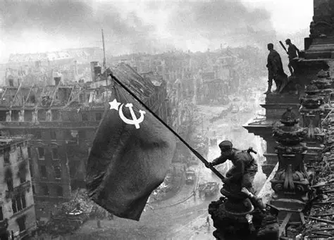
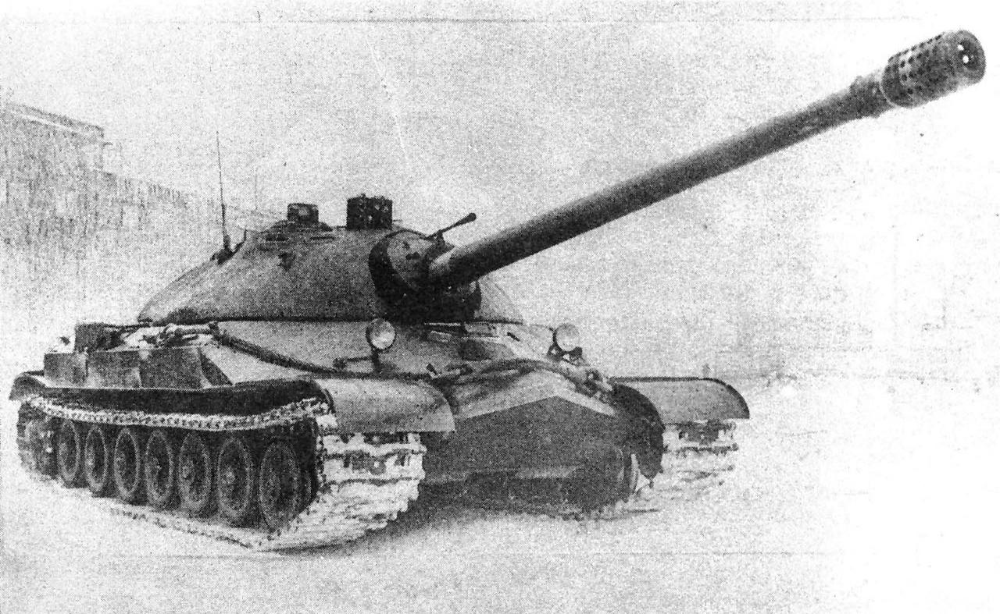

Ambiente de espionagem da KGB

Movimentações militares detectadas próximas à fronteira ocidental. Comando central em estado de prontidão máxima.

Agentes relatam movimentações suspeitas em Copacabana. Fontes internas confirmam que não era conspiração… apenas ensaio de escola de samba.
Agentes relatam que o lendário bigode de Stalin foi considerado símbolo de disciplina. Rumores dizem que cientistas tentaram replicar sua ‘resistência’ em laboratório.
Relatórios confidenciais indicam que o maior risco dentro da base não são os inimigos externos, mas sim o humor da Agente Tayna. Relatos apontam que ate mesmo o comandante Stalin tem medo quando se dirigi a ela